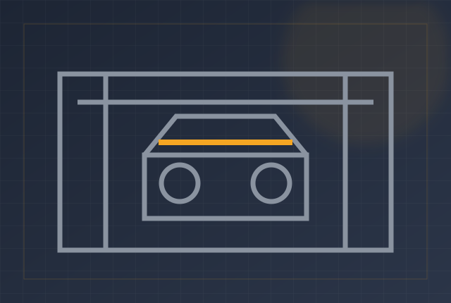
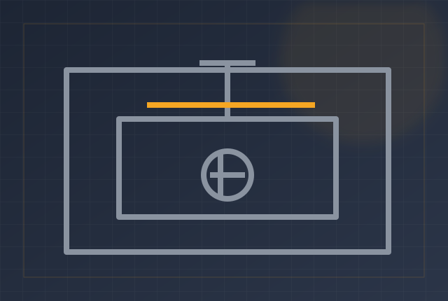

REF: PROJ-GALLERY
Projects & Workshop Gallery
A selection of our machinery, fabrication and structural steel work.

TIG Weld Assembly

Bucket Elevator System

Structural Steel Framework

Workshop Fabrication
Design & Engineering Review

CNC Laser Cutting
Have a project in mind? We engineer custom steel solutions to your exact requirements.
Start Your Project →